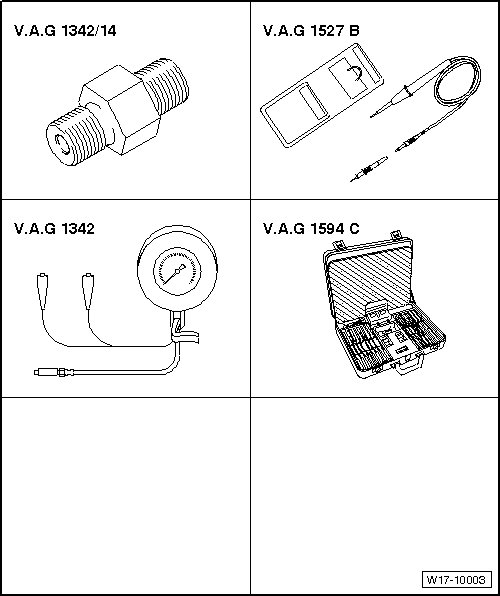

Electrical / Mechanical Repair
Special Tools
Special tools, testers and auxiliary items required
• Feeler gauge
• Straight edge
• Wiring diagram
• Drift 4 mm dia.
• Drift 6 mm dia.
• Hand drill with plastic brush attachment
• Flat scraper
• Protective glasses
• Old oil collecting and extracting device (V.A.G 1782)
• Silicon sealant (D 176 501)
• Engine support bridge (10 - 222 A)
• Shackle (10 - 222 A /12)
• Adapter (10 - 222 A /16)
• Adapter (10 - 222 A /19)


Special tools, testers and auxiliary items required
• Oil pressure gauge (V.A.G 1342)
• Adapter (V.A.G 1342/14)
• Voltage tester (V.A.G 1527B)
• Connector test set (V.A.G 1594C)